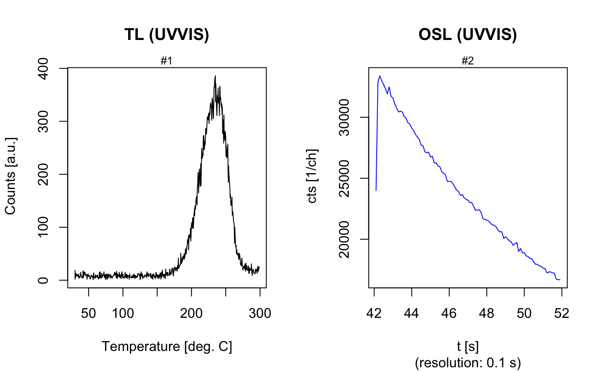

ExampleData.Al2O3C.RdMeasurement data obtained from measuring Al2O3:C chips at the IRAMAT-CRP2A, Université Bordeaux Montainge in 2017 on a Freiberg Instruments lexsyg SMART reader. The example data used in particular to allow test of the functions developed in framework of the work by Kreutzer et al., 2018.
Two datasets comprising RLum.Analysis data imported using the function read_XSYG2R
From both datasets unneeded curves have been removed and the number of aliquots have been reduced to a required minimum to keep the file size small, but still being able to run the corresponding functions.
Kreutzer et al., 2018 (TODO)
